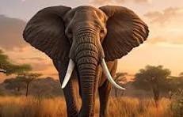
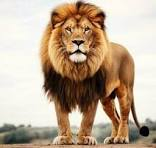
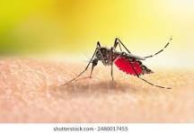
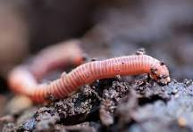
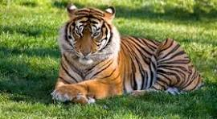
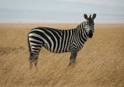

Exploremos el mundo animal
🔎 Buscar animales

Elefante Africano
El mamífero terrestre más grande del mundo.

Tiburón Blanco
El depredador más temido del océano.

Pingüino Emperador
El rey del hielo antártico.

León
Conocido como el "rey de la selva", símbolo de fuerza y liderazgo.

Jirafa
El animal terrestre más alto del mundo, con cuello y patas extremadamente largos.

Mosquito
Insecto hematófago que se alimenta de sangre y puede transmitir enfermedades.

Lombriz de Tierra
Animal subterráneo que recicla materia orgánica del suelo.

Oso Pardo
Gran omnívoro de fuerza impresionante, habitante de bosques y montañas.

Vaca
Animal domesticado y rumiante, base de la ganadería en todo el mundo.

Tigre
Gran felino conocido por sus rayas distintivas y fuerza.

Cebra
Mamífero africano conocido por su pelaje rayado blanco y negro.

Golden Retriever
Perro de raza popular, amable e inteligente.